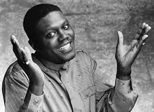

Bernie Mac
Bernard Jeffrey McCullough (October 5, 1957 – August 9, 2008),[1] better known by his stage name Bernie Mac, was an American comedian and actor. Born and raised on Chicago's South Side, Mac gained popularity as a stand-up comedian. He joined fellow comedians Steve Harvey, Cedric the Entertainer, and D. L. Hughley in the film The Original Kings of Comedy.
After briefly hosting the HBO show Midnight Mac, Mac appeared in several films in smaller roles. His most noted film roles were as Frank Catton in the Ocean's film series from 2001 through 2007 and as the title character of Mr. 3000. He was the star of his eponymous show, which ran from 2001 through 2006, earning him two Emmy Award nominations for Outstanding Lead Actor in a Comedy Series.
Mac's other films included starring roles in The Players Club, Head of State, Bad Santa, Guess Who, Pride, and Soul Men.
Early Life and Education
Bernard Jeffrey McCullough was born on October 5, 1957, in Chicago, Illinois.[2] Mac was the second child of Mary McCullough and Jeffrey Harrison.[3] Mac was raised by his single mother and his grandparents on the city's south side.[4]
Mac began his high school career at Chicago Vocational High School. During 1973, Mac moved to Tampa, Florida, to attend Jesuit High School following the death of his mother during his sophomore year.[5] Shortly afterward, Mac's older brother and his estranged father both died. Mac later returned to Chicago and graduated from Chicago Vocational in 1975.[6]
During his 20s and through his early 30s, Mac worked in a variety of jobs, including janitor, coach, professional mover, cook, bus driver, Wonder Bread delivery man, furniture mover, and UPS agent, while doing comedy on the weekends at clubs and parties.[5]
Career
Mac's influences were from The Three Stooges and listening to stand-up comedians Richard Pryor and Redd Foxx. Mac started as a stand-up comedian in Chicago's Cotton Club. After he won the Miller Lite Comedy Search at the age of 32, his popularity as a comedian began to grow. In 1992, a performance on the 3rd episode of HBO's Def Comedy Jam thrust him into the spotlight; after Martin Lawrence was unable to calm an increasingly hostile crowd, Mac went onstage and told the audience "I ain't scared o' you m...." and that he "didn't come here for no foolishness."[7]
The Bernie Mac Show

In 2001, the Fox network gave Mac his own television sitcom called The Bernie Mac Show portraying a fictional version of himself. In the show, he suddenly becomes custodian of his sister's three children after she enters rehab. Mac broke the fourth wall to tell his thoughts to the audience.
The show contained many parodies of events in Bernie's actual life. Mac, who grew up on Chicago's South Side, was a fan of the Chicago White Sox, and would often sneak a reference to his favorite team in episodes, including enlisting then-White Sox pitcher Jon Garland to make a guest cameo appearance. In the 2005 season he wore a White Sox jacket and cap, and congratulated his hometown Chicago White Sox and their staff members on their recent World Series championship.
The show was not renewed after the 2005–2006 season. The series finale aired on April 14, 2006. Among other awards, the show won an Emmy[8] for "Outstanding Writing", the Peabody Award for excellence in broadcasting, and the Humanitas Prize for television writing that promotes human dignity.[9] His character on The Bernie Mac Show was ranked No. 47 in TV Guide's list of the "50 Greatest TV Dads of All Time".[10]
During his run on the show, Mac had co-starring roles in the Ocean's trilogy (2001–2007), Head of State (2003) and Bad Santa (2003), as well as starring roles in the baseball-themed film Mr. 3000 (2004) and Guess Who? (2005), a remake of the 1967 film Guess Who's Coming to Dinner.
Later Years
On March 19, 2007, Mac told David Letterman on the CBS Late Show that he would retire from his 30-year career after he finished shooting the comedy film, The Whole Truth, Nothing but the Truth, So Help Me Mac. "I'm going to still do my producing, my films, but I want to enjoy my life a little bit", Mac told Letterman. "I missed a lot of things, you know. I was a street performer for two years. I went into clubs in 1977 and was on the road 47 weeks out of the year."[11]
During this time, Mac was having success as a popular film actor, starting with an appearance in the 2007 film Transformers as the car salesman "Bobby Bolivia", and serving as the voice of Zuba, Alex the Lion's long-lost father in Madagascar: Escape 2 Africa. He co-starred with Samuel L. Jackson in the 2008 musical comedy Soul Men. These last two movies were released months after his death. His final film role was as Jimmy Lunchbox in the 2009 film Old Dogs which was released a year after his death.
Personal Life
Marriage
Mac married his high school sweetheart Rhonda Gore on September 17, 1977, and together they had a daughter in 1978.[12][13]
Health and Death
In the final 20 years of his life, Mac publicly disclosed that he had severe sarcoidosis, a disease of unknown origin that causes inflammation in tissue.[14] On July 19, 2008, Mac was admitted to the Northwestern Memorial Hospital in his hometown of Chicago.[15] After being treated in the ICU for three weeks, Mac went into cardiac arrest and subsequently died during the early morning hours on August 9, at the age of 50. However, the complications were not attributed to his sarcoidosis, according to his publicist.[16]
Legacy and Tributes
Mac's public memorial was held a week after his death at the House of Hope Church, with nearly 7,000 people in attendance.[17] Notable mourners at Mac's funeral were Chris Rock, Chicago Mayor Richard M. Daley, Samuel L. Jackson, Ashton Kutcher, Don Cheadle, the cast members from The Bernie Mac Show, and his Kings of Comedy fellows D. L. Hughley, Cedric the Entertainer, and Steve Harvey.
The first two of Mac's posthumous films, Soul Men and Madagascar: Escape 2 Africa, were released three months after his death and were dedicated to him. Mac's third posthumously released and final film, Old Dogs, was released a year after his death. The 2008 Bud Billiken Parade, which was held in Chicago on the day of Mac's death, was also dedicated to his memory.[14] On the day of Mac's funeral, his hometown's local television station WCIU-TV aired an exclusive television special, A Tribute to Bernie Mac, and had interviews with his former colleagues including Camille Winbush, Chris Rock, Joe Torry, Cameron Diaz, Don Cheadle, and some of his family members & close friends.
During Steve Harvey's television show which aired November 14, 2016, Harvey read a proclamation from Chicago's Mayor Rahm Emanuel proclaiming November 14 as "Bernie Mac Day".[18] Steve Harvey's guests included Bernie's wife Rhonda, their daughter Je'Niece, granddaughter Jasmine, and Bernie's The Original Kings of Comedy co-stars D. L. Hughley, Cedric the Entertainer, and Guy Torry (who was the original host at the beginning of the tour). Mike Epps, appearing via satellite, along with the principal of Bernie and Rhonda's alma mater Chicago Vocational High School (CVS), revealed and unveiled the renaming of CVS Auditorium to the "Bernie Mac Auditorium".[19]
On February 14, 2017, Rolling Stone named Bernie Mac #41 of the 50 Best Stand-Up Comics of All Time.[20]